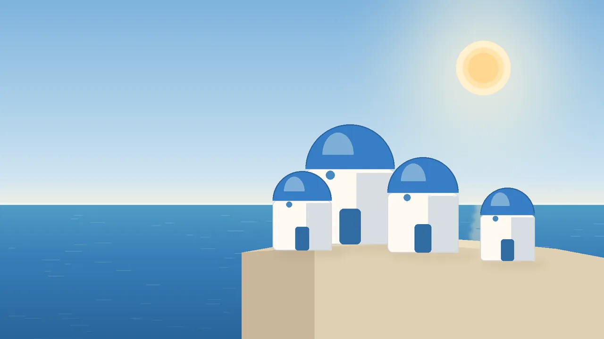

給寶貝與小旅伴的 · 台南兩天一夜
溫馨浪漫台南之旅
慢慢吃、慢慢逛，把古城的午後和夜晚留給彼此。以下安排以手機閱讀為主，走輕鬆不趕路的節奏。
行前提醒
本頁的時間與店名皆為示意，出發前請替換成實際訂位、營業時間與交通資訊。
DAY
01
01
老城散步與夜食
抵達後先填飽肚子，再沿著老街慢慢走。
-
台南車站・行李寄放（示意）
先寄放行李、補充水分，確認接下來的步行與交通路線。
-
古城家常菜・午餐店（示意）
用一份熱騰騰的台南風味午餐開場，吃飽再開始下午行程。
-
神農街與海安路（示意）
沿著老屋街區拍照、逛小店，留一段不排太滿的散步時間。
-
府城小吃聚落・晚餐（示意）
挑幾樣想吃的小吃分著吃，飯後再到附近街區散步消化。
DAY
02
02
早晨古蹟與伴手禮
早起看一點風景，帶著喜歡的味道回家。
-
巷口牛肉湯・早餐（示意）
用一碗暖胃早餐開啟第二天，吃完保留體力繼續走景點。
-
赤崁樓周邊・古蹟散步（示意）
走訪古蹟與周邊街巷，安排一段慢慢看建築、聽故事的時間。
-
老宅餐桌・午餐（示意）
找間舒適的老宅餐館坐下來休息，替下午返程補充能量。
-
府城甜點舖・伴手禮（示意）
挑選常溫、好攜帶的點心，最後整理行李並預留回程交通時間。
行前提醒
天氣：晴時多雲，約 24–30°C（示意）
要帶的東西：水壺、防曬、雨具、行動電源（示意）
集合時間：第一天 10:00，台南車站前（示意）
集合地點：台南火車站
掃描開啟本頁行程
今晚吃什麼
填暱稱、選一個，再按投票。大家的票即時共用（示意選項，之後可換）。